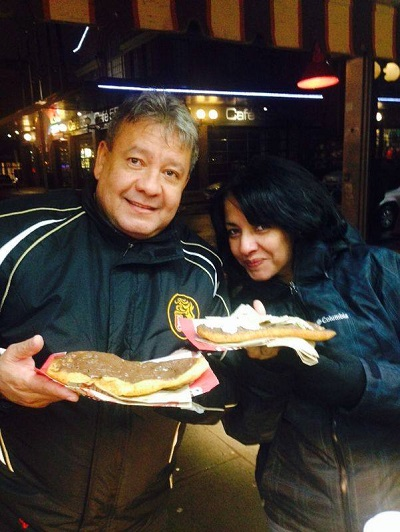
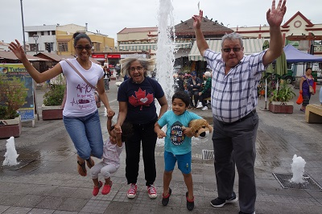
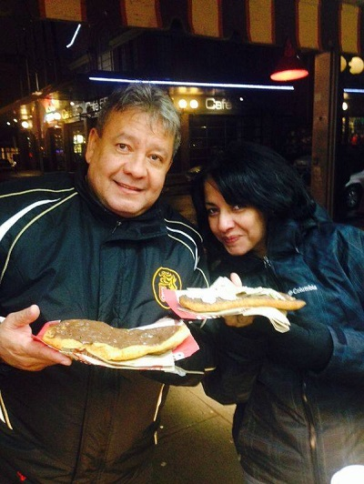
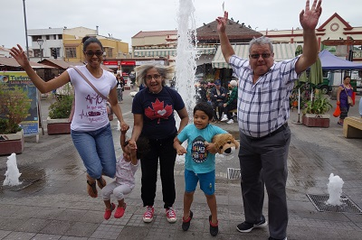
 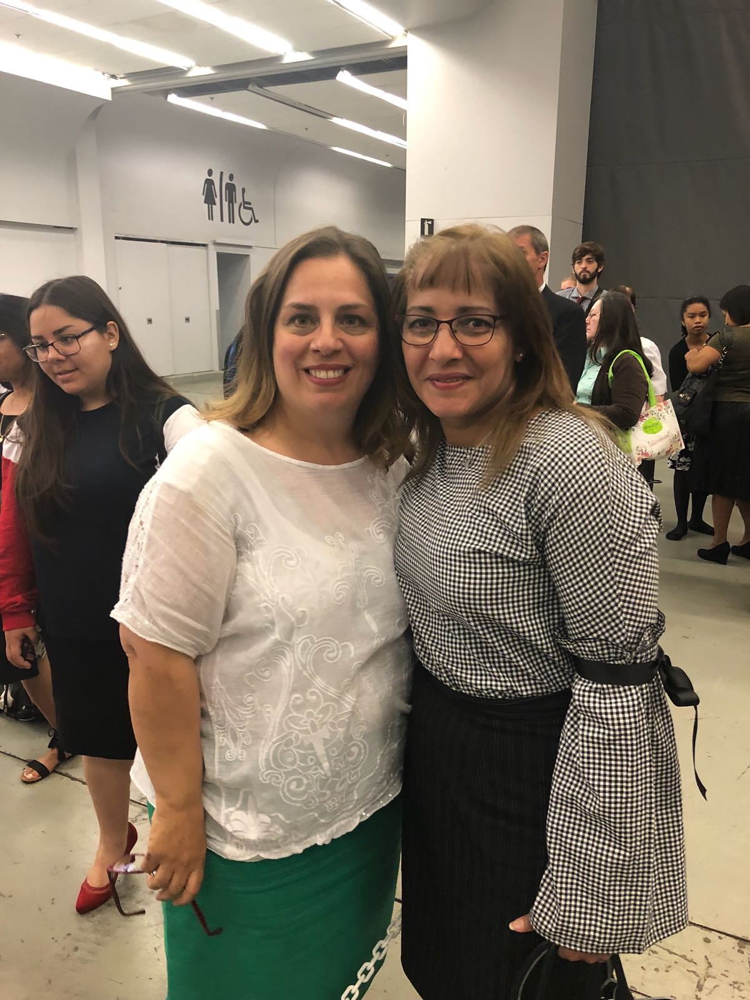
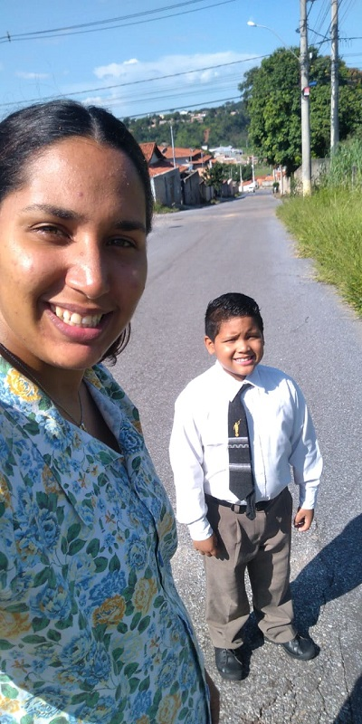
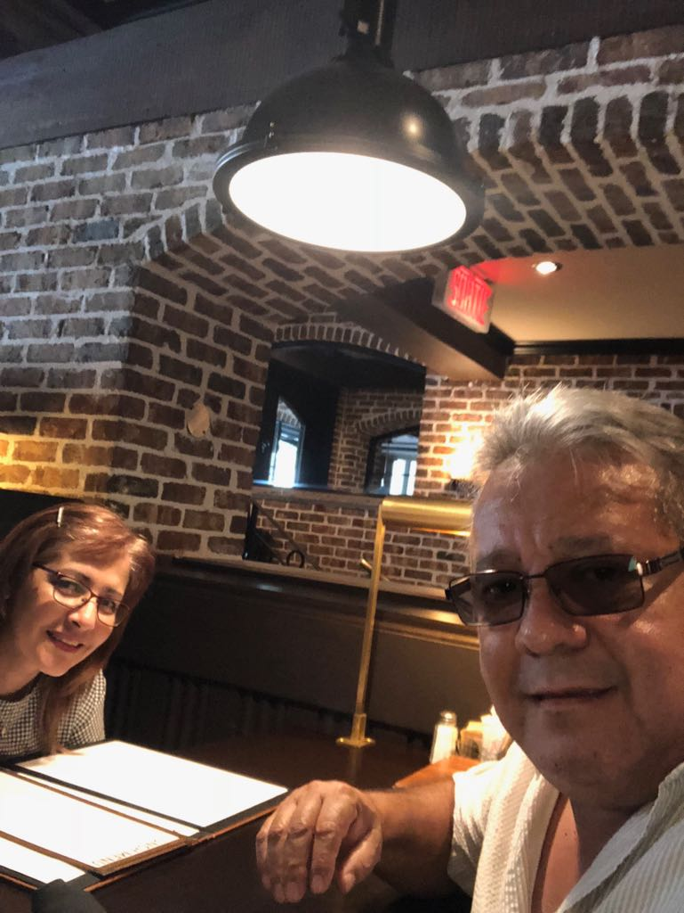
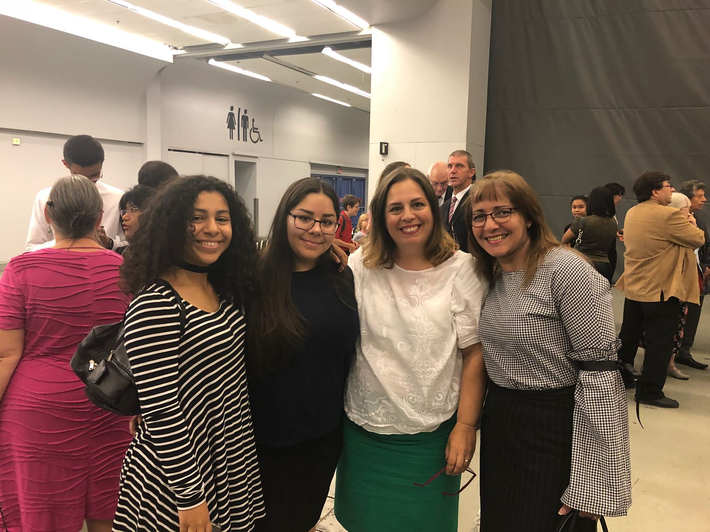
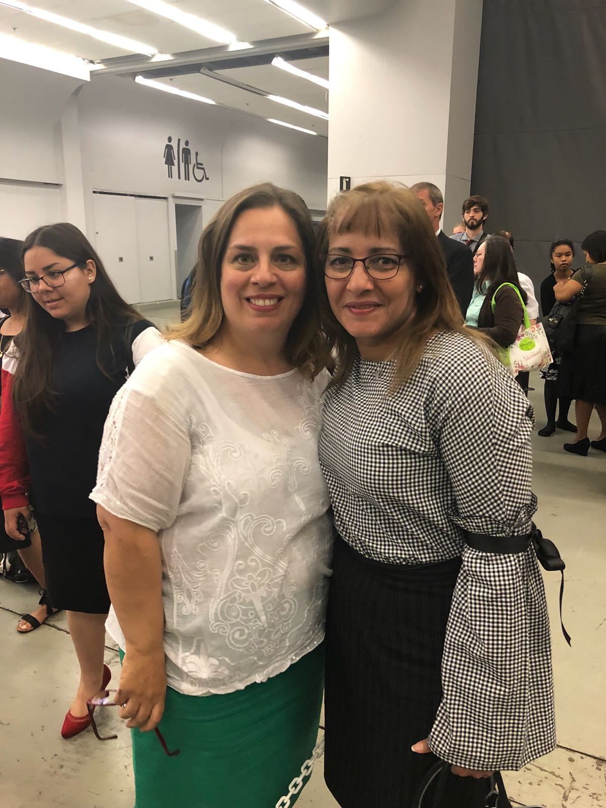
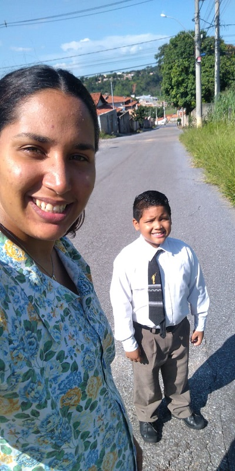
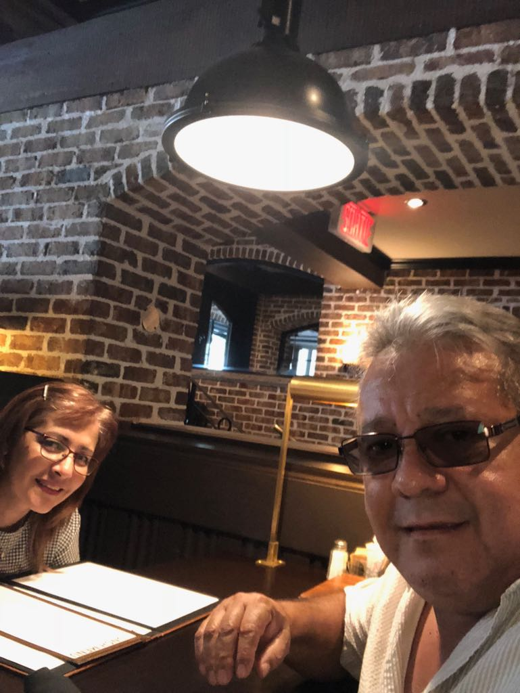
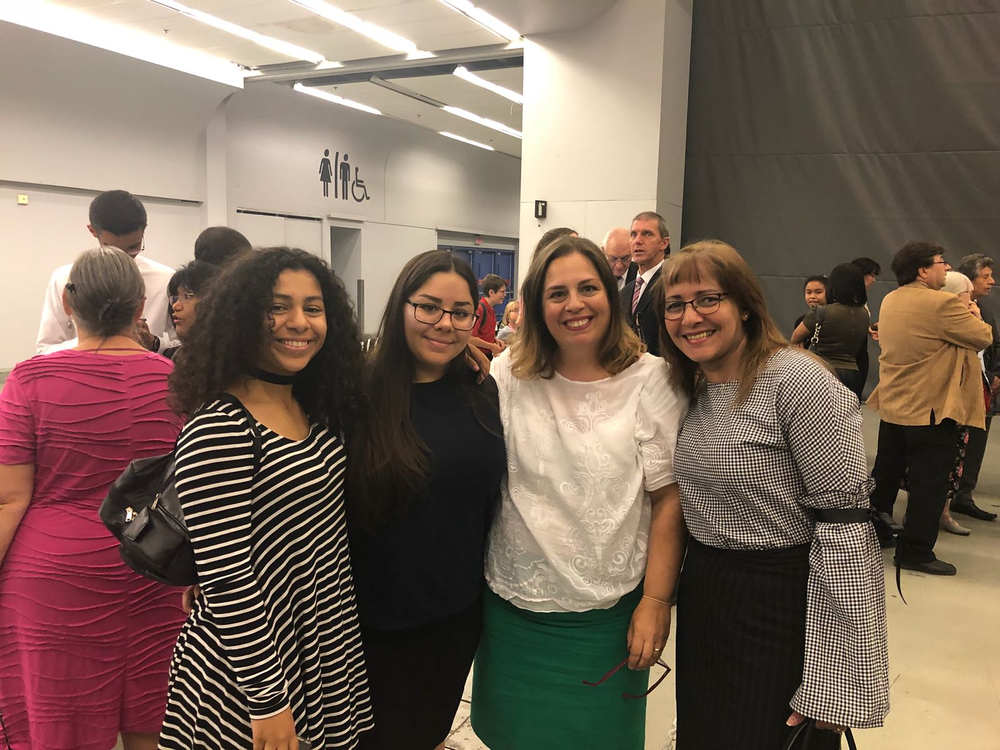

Diaz Quintero Memories
Implementing my solution will help me show our Memories Personal Site that will help our families grow together and I can leave something to our grandchildren to continue the work. I would love to tell you more about what I am working on. Wait, is there a time that we can talk in the next day or two? Or just wait for the upcoming release of my personal web site and you can see it for yourself.
Elder Petit and Tequeños
Tequeños are a popular meal or snack in Venezuela. They are basically white cheese sticks wrapped with a crunchy and slightly sweet dough. And as most delicious things, Tequeños are fried."
Back home, they are a very popular snack food, party food, or even breakfast. No gathering or party is complete without a platter of Tequeños. Everyone loves them – and what’s not to love? Fried dough with cheese inside?
They are typically served with a dipping sauce, like Guasacaca sauce, Pink sauce, or garlic sauce. The Spicy Pink Sauce recipe that I’ve included with the recipe will 100% knock your socks off! It’s creamy and wonderful. I made the pink sauce with my eggless mayo to keep things egg-free.